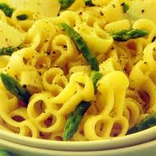
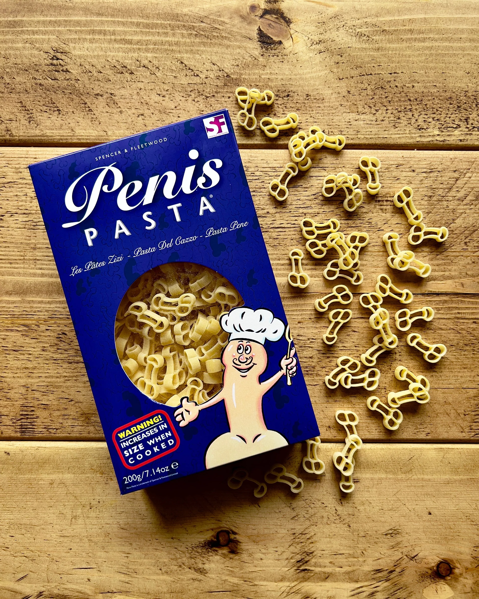

Ingredientes:
- 300g de macarrão penis pasta
- 150g de panceta de obeso
- 2 ovos de ornitorinco
- 100g de queijo de suvaco
- Pimenta-do-reino a gosto
Modo de Preparo:
1. Cozinhe o macarrão al dente.
2. Enquanto isso, frite a panceta até ficar crocante.
3. Em uma tigela, bata os ovos e misture o queijo .
4. Misture o macarrão quente com a panceta e, em seguida, acrescente a mistura de ovos e queijo.
5. Sirva imediatamente, polvilhando com pimenta-do-reino.